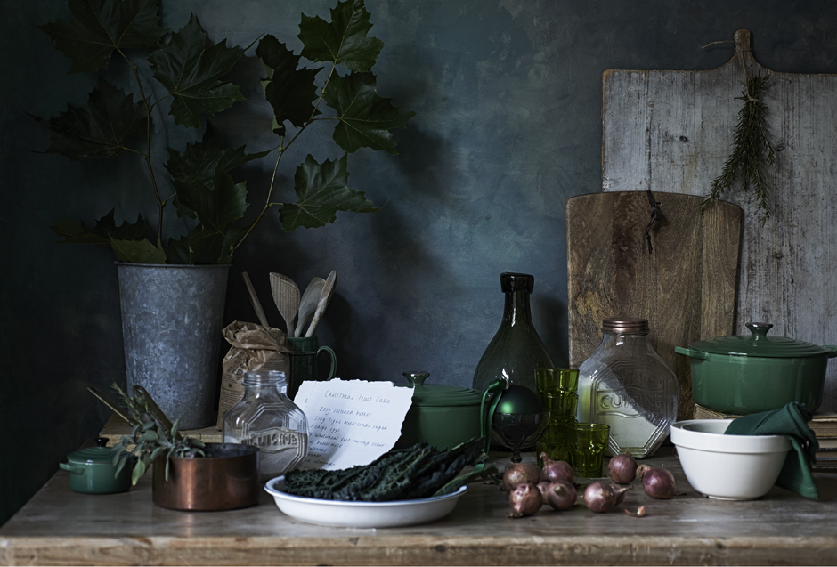
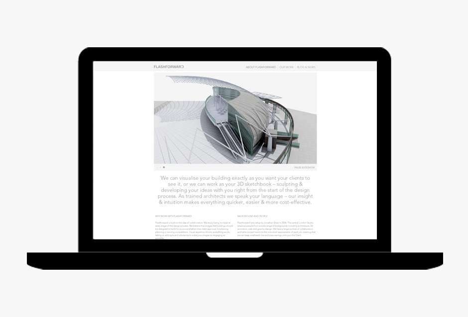

PROFILE
Trésor is the studio of digital creative Bettina Szabo-Shaw. I am part technologist, part designer specialising in Interactive- and User Experience Design as well as Front-end development.
I work either directly with clients, often by putting a team of experts together or collaborate with design studios.
READ MORE
- 

- 
Featured Project
Website and Identity Design for Lifestyle & Interior Stylist
Featured Project #1
Featured Project #2
Featured Project #3
Identity & Website Design for Interior Stylist
Custom logo and website design for Claire Morgan - one of the leading interior stylists in the UK. The aim was to bring her distinctive philosophy and style to the online presence whilst letting the work flourish.
Identity was implemented across printed and digital media.
Learn more